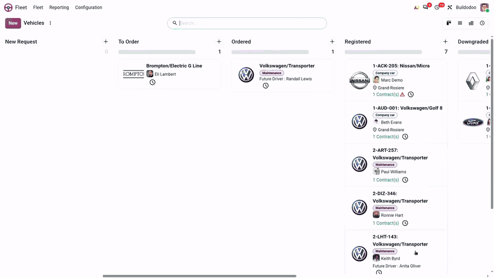
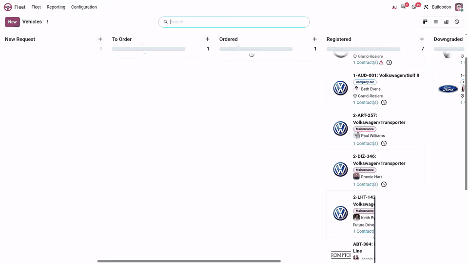
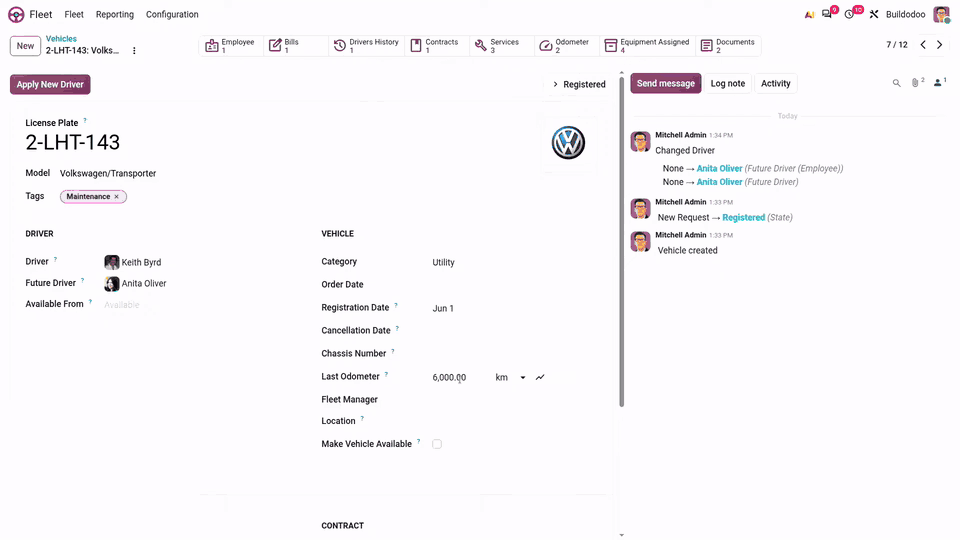

One system for MOL's contacts, drivers and vehicles in the Philippines.
A MOL-branded business card app for your leadership, attendance for your agency drivers, and management of your ten company vehicles — delivered on Odoo by one partner, and built to pass the Tokyo headquarters assessment.
Prepared for IT Administration, MOL Enterprise (Philippines) Inc., MakatiPrepared by TechNext Philippines, Inc.Date 26 November 2026Follows discovery session of 26 November 2026
10company vehicles: Alphard, Innova, Zenix, mu-X and Montero
1vendor and one environment, in place of several separate tools
Phase 2asset management, configured by MOL's own IT team with our training
Executive summary
What we recommend.
We recommend that MOL Enterprise Philippines run business contacts, driver attendance and its company vehicles on a single Odoo system, implemented by TechNext, with a dedicated MOL-branded app for scanning business cards.
This answers the three priorities you set in our discovery session, in your order. It replaces a fleet provider that has been slow to respond, removes manual work from the executive office, and gives IT Administration one environment to govern instead of several vendors.
It also answers the question you raised most often: how vehicle time and fuel are really being used. Daily odometer photos at clock-in and clock-out, your existing Shell fuel data, and an optional engine-data pilot show where hours and litres go — without recording where executives travel.
Asset management follows as a second phase that your own team configures. Because one Odoo user licence covers every app, that phase adds no licence cost, and our training prepares your team to build it.
Our understanding
Where MOL Philippines is today.
MOL Enterprise (Philippines) Inc. is the strategic control centre for MOL's wholly owned operations in the country. Its people manage data for hundreds of vessels. The office tools behind them have not kept pace.
Today
What you told us
The president's business cards are typed up by hand by the executive assistant.
Drivers are supplied by an agency and never report to the office, so their hours are hard to verify.
Fuel use is worked out from Shell fleet card exports and a Power BI report built by IT.
High fuel figures cannot be explained: traffic, long idling, or misuse all look the same.
The driver policy forbids waiting in a running vehicle, but there is no data to enforce it.
The current fleet provider does not respond to requests.
With this proposal
What changes
A card is photographed in a MOL app and is in the shared contact database in under a minute.
Each driver clocks in and out at the vehicle, with the place recorded and the odometer photographed.
Fuel, kilometres and hours per vehicle sit in one report, updated daily.
Days with many hours and few kilometres stand out, and an engine-data pilot can measure idling directly.
Renewals for insurance, lease and registration raise a warning before they lapse.
One partner, one system, one service agreement.
Objectives
How we will know it worked.
Proposed measures of success, to be agreed with you at design sign-off.
Under 1 minute
Card to contact
From photographing a business card to the contact being saved and shared in Odoo.
Every driver, every day
Verified attendance
Clock-in and clock-out with location and an odometer photo, for all agency drivers.
10 of 10
Vehicles on record
Each vehicle with driver, documents, contracts, services and daily kilometres.
Zero lapses
Renewals
No vehicle on the road with expired insurance or registration, in the spirit of MOL's safety targets.
Priority 1 · MOL-branded mobile app
A card scanner built for MOL's leadership
The people using this tool include the president and senior leaders, so it has to feel finished. We propose a dedicated mobile app, branded as MOL, published for iPhone and Android. It does one job well: photograph a business card and file the contact in MOL's Odoo database.
1 · ScanPhotograph the card, front and back
2 · ReadThe app reads the text on the phone itself
3 · ConfirmCheck the fields on one screen
4 · SavedThe contact is in Odoo, with the card image
Why custom
Odoo's own app can scan cards, but it carries Odoo's branding and menus. A purpose-built app opens straight to the camera, shows only MOL's identity, and hides everything a leader does not need.
What the app does
MOL name, logo and colours throughout, on the App Store and Google Play
Text recognition (OCR) on the device, so card images need not leave the phone to be read; works offline and syncs later
Reads English and Japanese cards
Warns when the contact already exists, to avoid duplicates
Saves name, company, title, phones, email and address to Odoo Contacts, with the card photo attached
One tap to call, email or message the contact, or add it to the phone's address book
Sign-in with each person's own account; an assistant can scan on behalf of an executive
How it connects
Odoo is the single database; the app holds no separate copy
Published under MOL's own Apple and Google developer accounts; private distribution to MOL staff only is available if preferred
Quoted separately as agreed. Existing projects and code we would build on are listed on the Research & preparation tab.
The driver's day in the Odoo app
Start of day. The driver opens the Odoo app on the phone and clocks in. Location is switched on, so the clock-in records where it happened.
Odometer photo. The driver photographs the dashboard odometer and types the reading.
End of day. Clock out the same way: location, odometer photo, reading.
What the office sees
Hours rendered per driver per day, ready to reconcile with the agency's billing
Kilometres driven that day, from the two readings, posted to the vehicle in Fleet
The photos as proof when a reading is questioned
Who is on duty, on leave or not yet clocked in
Office staff: ZKTeco terminals
Your existing ZKTeco devices can keep serving the office. A connector sends each punch to the same attendance records in Odoo, so drivers and office staff appear in one report. We will match the connector to your device models. Until it is approved, the exported attendance file can simply be emailed to a dedicated mailbox, where it is read and filed into Odoo automatically.
Priority 2 · Odoo Attendances + Fleet
Clock in with a photo of the odometer
Agency drivers start and end their day at the vehicle, not at the office door. Two clock-ins a day, each with a location stamp and an odometer photo, give you attendance and daily vehicle use from a single action, with no extra hardware in the vehicle.
Privacy
Location is captured only at clock-in and clock-out. The route in between is not tracked, so executive trips stay confidential.
A fixed tablet in each vehicle with badge scanning, as discussed in the session, remains available as an alternative if you prefer drivers not to use their own phones.
Priority 3 · Odoo Fleet
Ten vehicles, one record each.
Odoo Fleet keeps each vehicle's driver, documents, contracts, services, odometer and costs together. TechNext configures it for MOL, loads your ten vehicles, and connects it to driver attendance and your Shell fuel data. Click any clip to enlarge it.
Register
Register each vehicle. Plate, model, driver and registration date. Your ten vehicles are loaded for you.
Drivers
Who has the keys. Current, past and next driver, with dates, for each Alphard, Innova, Zenix, mu-X and Montero.
Documents

Papers on the vehicle. LTO registration, official receipt and insurance policy, findable in seconds.
Renewals

Renewals flagged early. Insurance, lease and registration dates raise a warning before they lapse.
Costs
Cost per vehicle. Contracts, services and fuel per month and per vehicle, in place of a manual Power BI build.
Usage

Usage per vehicle. Kilometres from the drivers' daily odometer photos, compared across the fleet.
Clips show Odoo's standard Fleet app with Odoo's demonstration data. Your own vehicles, drivers and documents replace it at set-up.
Fleet · beyond the standard app
Moving, idling or parked?
Your main question is not where a vehicle went but how its engine hours were spent: driving, stuck in traffic, or idling while the driver waits. That tells you whether high fuel use comes from traffic or from behaviour, and supports your driver policy.
Odoo Fleet does not read the engine by itself, so we propose four layers, starting with the ones that need no vehicle hardware.
Privacy
Executive trips stay confidential. The monitoring records engine state and duration only. Location is not collected.
Layer 1 · Fuel data you already have
Import your Shell fleet card exports into Odoo. Fuel and odometer per fill-up appear on each vehicle, with gaps and empty fields flagged for correction.
Layer 2 · Daily odometer from the driver
Each clock-in and clock-out carries an odometer reading and photo. Comparing hours on duty with kilometres driven shows days with long stationary periods, and checks the Shell figures.
Layer 3 · The vehicle tablet as a sensor
Where a tablet is fitted in the vehicle, its motion sensor and GPS can estimate moving, idling and parked time. The tablet works this out itself and sends only the state and duration, never the position.
Layer 4 · Engine data from the vehicle
A small device in the diagnostic (OBD) port reads engine speed and road speed and reports minutes moving, minutes idling and engine hours to Odoo. Because vehicle makers differ in what the port exposes, we propose a pilot on one vehicle of each model before any fleet-wide purchase.
The tablet method, device options, risks and the pilot plan are on the Research & preparation tab. Custom device development is quoted separately.
In practice
A working day, three views.
The presidentand the executive assistant
Receives a card at a partner meeting.
Opens the MOL app and photographs it, or hands it to the assistant to scan later.
Checks the name, company and title on one screen and taps save.
The contact is in MOL's database, with the card image, ready to call or email.
A driverassigned to the Alphard
Arrives at the vehicle and clocks in on the phone; the place is recorded.
Photographs the odometer and types the reading.
Drives. Nothing is tracked on the road.
At day's end, clocks out the same way. Hours and kilometres are filed.
IT Administrationreviewing the week
Opens one report: hours, kilometres and fuel per vehicle and per driver.
Sees a day with nine hours on duty and twelve kilometres driven, and asks why.
Notes the mu-X insurance warning and starts the renewal.
Sends the agency its drivers' verified hours for billing.
Delivery plan
Five milestones, each with a sign-off.
An indicative nine-week plan from contract signing. Dates are fixed in the agreement once the start date is known. Each milestone ends only when MOL's sponsor and TechNext's project manager sign it off.
Week 1Milestone 1
Mobilisation
Kick-off, project plan, access to the Odoo database, and collection of the vehicle list, driver list, Shell exports and ZKTeco device models.
Signed off whenAgreement signed, kick-off held, plan agreed
Weeks 2–3Milestone 2
Design
Screen designs for the MOL card app, the driver clock-in flow, and the fleet set-up: stages, tags, contract types and reports.
Signed off whenDesigns approved by MOL, including use of the MOL name and logo
Weeks 4–7Milestone 3
Build and configure
Fleet, attendance and contacts configured; ZKTeco connector installed; card app test build on your phones; vehicles and trial data loaded.
Signed off whenConfigured system and app test build demonstrated
Week 8Milestone 4
User acceptance testing
Your users test real cases: scanning cards, driver clock-ins with odometer photos, and the fleet reports. We fix what you find.
Signed off whenTest scripts passed and signed
Week 9Milestone 5
Go-live and handover
Drivers start clocking in, vehicles are live, the card app is submitted to the stores, and documentation and training are handed over. Two weeks of daily support follow.
Signed off whenFirst live records in Odoo; app submitted for store review
Running alongside: the Tokyo headquarters vendor assessment, and Apple and Google store review. Both are outside TechNext's control and can move the go-live date.
Team and governance
Who does what.
TechNext
Executive sponsor and solution lead
Our CEO, who leads operations and IoT work and joined the discovery session
Solution architect
Designs the Odoo set-up, the attendance flow and the integrations
Account manager
Your day-to-day contact for commercial matters
Mobile developer
Builds and publishes the MOL card app
Odoo consultant
Configures Fleet, Attendances and Contacts, and delivers training
MOL Enterprise Philippines
Sponsor
Approves each milestone and escalates decisions
Project manager
IT Administration; coordinates users, data and the headquarters assessment
Key users
Executive office for the card app; general affairs for drivers and vehicles
IT team
Takes over administration and builds asset management in phase 2
A status report every Friday. Issues go to the two project managers first, then to the sponsors.
Phase 2 · led by your team
Asset management, built in-house
You plan to configure asset management yourselves: registration, tracking, life cycle, and a depreciation view for accounting so the register and the books do not drift apart. Because one user licence covers every Odoo app, this adds no licence cost.
How TechNext supports it
A demonstration of asset monitoring, depreciation and dashboards
Hands-on training so your team can configure it with confidence
Odoo Studio, the low-code builder, for your own fields, screens and reports — a similar role to the Power Platform you use today
Review of your configuration before it goes live, if you want a second pair of eyes
Training
Your team runs it afterwards.
Training is itemised separately in the quotation, as you requested, so it can be budgeted and isolated on its own.
Included
Hands-on Odoo training
Direct sessions with our Odoo specialists for administrators and users of the three tools, plus Odoo Studio for your IT team. Odoo's own free online courses complement these.
Optional
AI and IoT workshops
Three tiers: executives, management, and staff. Content is shaped by your AI policy and security posture, so we will review the policy you share before fixing the agenda.
Optional
Smart office and IoT
Sensors and automated devices can report into Odoo. Offered as a follow-on once the three priority tools are live.
Investment
Itemised, so each line can be budgeted alone.
Software subscriptions are billed by Odoo directly. Implementation, training and support are billed by TechNext. Amounts are in the quotation that accompanies this proposal.
Item
What it covers
Billed by
Amount
Odoo user licences
Custom plan: every Odoo app for each named user
Odoo
See quotation
Odoo.sh hosting
Odoo's own cloud platform, chosen because it allows the ZKTeco connector and the custom attendance and monitoring additions
Odoo
See quotation
MOL business card app
Design, build and store publication of the MOL-branded iPhone and Android app; on-device OCR; Odoo Contacts set-up
TechNext · Apple and Google for store accounts
Separate quotation
Driver attendance
Mobile clock-in with location, odometer photo and reading; link to Fleet; attendance reports
TechNext
See quotation
ZKTeco integration
Email-in import of exported attendance files from day one; connector for office terminals, tested against your device models
TechNext · module vendor
See quotation
Fleet management
Fleet configuration, loading of 10 vehicles, Shell fuel data import, cost and usage reports
TechNext
See quotation
Vehicle tablets (optional)
One 4G tablet per vehicle with mount and data plan: a fixed clock-in point, and the sensor for estimating moving, idling and parked time
Hardware supplier · telco
Optional
Engine monitoring pilot
OBD device trial on one vehicle per model, findings report, recommendation
TechNext
Separate estimate
Training
Hands-on Odoo and Studio sessions; optional AI and IoT workshops
TechNext
Itemised in quotation
Support
Service levels as set out in the SLA
TechNext
See quotation
The ZKTeco connector is subject to confirming your device models. Asset management configuration is by MOL's team and carries no implementation fee.
Compliance
Ready for the Tokyo assessment
Any new system must pass a vendor assessment by headquarters covering cybersecurity, safety and compliance. We will complete your assessment forms and questionnaires for the TechNext services, and coordinate with Odoo for the platform itself.
AI tools
This proposal relies on features inside Odoo. Any AI tool outside Odoo would be put through your separate security assessment before it is used with MOL data.
Documents supplied with this proposal
Draft Master Service Agreement for review by headquarters
Service Level Agreement
Non-Disclosure Agreement
Cybersecurity summary for TechNext's delivery practices
About the platform
Hosted on Odoo.sh, Odoo's own cloud platform
Odoo publishes ISO 27001 and SOC 2 attestations for its cloud service; we will include the current certificates in the assessment pack
Sign-in with staff Microsoft accounts, in line with your Microsoft 365 E5 environment
Every record keeps a log of who changed what and when
Access is set per user and per app
Why TechNext
One partner for the whole of it.
Software and devices
Odoo and IoT under one roof
We implement Odoo and also build the things around it: mobile apps, device connectors and sensor integrations. The card app, ZKTeco link and engine pilot do not need three suppliers.
Local
A Philippine company
TechNext Philippines, Inc. contracts, invoices and supports you locally, under Philippine law and the Data Privacy Act.
Your team first
Built to be handed over
You said your team will build asset management itself. We document what we configure and train your IT team, so you are never dependent on us.
Next steps
From proposal to go-ahead.
TechNext
Quotation and agreements
Itemised pricing, card app estimate, draft MSA, SLA and NDA, in time for this week's budget review.
MOL
Policy and forms
Share the AI and cybersecurity policy and the vendor assessment forms.